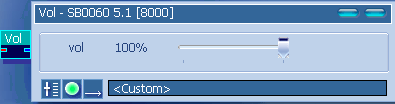
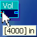
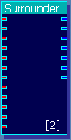
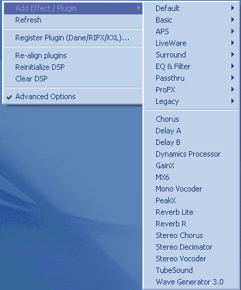
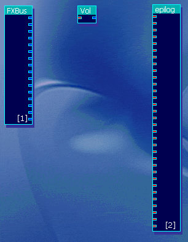
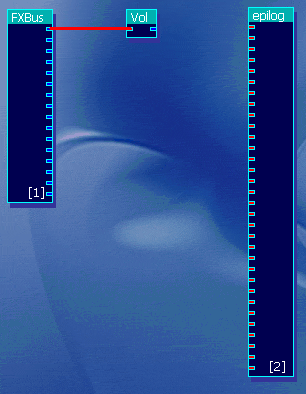
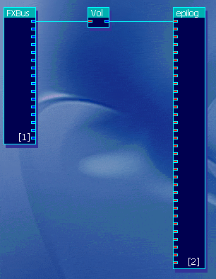
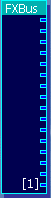

This part of the guide will show you the basic of DSP routing.
The DSP

Note: The "Timbre" plugin looks different to the rest of the plugins
as it was replaced by using Max
M.'s UFX pack, which is designed for experience kX
users who want more flexibility in the DSP. This is not required and I only
recommended these for advanced users.
Looks confusing at first glance, doesn't it?
The good news is that it isn't.
Think of it as a rack mounted system in a studio, devices with inputs (red
squares on the DSP plugins) and outputs (blue squares on the DSP plugins).
All these devices to something to the signal.
Those plugins with out inputs (FXBus & prolog) represent the beginning
of the system, with the epilog represening the end.
More simply, Prolog and FXBus contain the inputs, epilog containts the outputs,
and everything inbetween does something to the signal.
Lets start with a basic
plugin, "Vol"

The settings box is opened by double clicking on the plugin in the DSP window.

When you hold the mouse over an input or output box, a tooltip will popup telling
you the name/function of the connector.
For a simple plugin like this it is almost unneccesary, but for a larger,
more complex plugin, such as the surrounder…

…these tooltips become vital.
To add a new plugin module to the DSP…

…right click on an empty space in the DSP and select the "Add Effect/Plugin"
option. You now have a menu of additional plugins you can load.
Ok, to draw in the "wires" that connect each plugin module to each other,
you need to click on a connector square, and then drag the mouse over
until you reach the desired connector, and the release the mouse. A blue
wire should now be in place.
Note: You can only connect Inputs (Red) to Outputs (Blue), In-In and Out-Out
will not work
To make things easy i am using a cleared DSP.

Here we have the FXBus which contains the inputs, Vol which processes the signal
and epilog, which contains the outputs.

Draw a wire between the first FXBus in to the Vol module's input.

Then draw a wire between the Vol's output and the first epilog Input

Congratulations, you have now
created a DSP where you can control the volume of the Left sound channel, if
the kX Router window is using default settings.
Note: Although each output of a module can be connect to multiple inputs on
other modules, each input can only be connected once.
The FXBus

The FXBus be confusing to some users, as it describes its outputs as "FXBusX".
Where
"X" is a number.
But each of these outputs…

…matches the
numbers assigned in the kX Router.
The first two numbers per device are
the main outs, and the second two are the fx sends, that in the default DSP,
get routed to the Reverb and Chorus effects.
Using the FXBus in the DSP is now easier if you check what each out put is
in the kX Router
The easiest way to learn the DSP is by trying to build your own layouts ,
and I hope this guide helped you to understand the basics of the DSP well enough
for you to be able to give it a go and making your own DSP setup.
Top Index
kX Guide © 2004 by Chris Stannard, a kX
user. All rights reserved.